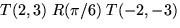
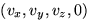
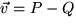
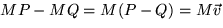
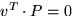
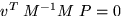

Pot semblar que l'anterior és molt restrictiu. A fi de comptes pot caldre que quelcom giri al voltant d'un punt diferent de l'origen, amb un eix diferent d'un eix coordenat, que s'escali amb un altre centre que no l'origen de coordenades,... De fet altres transformacions que puguin caldre es poden trobar com a composicions de les anteriors (on les matrius es composen usant les regles habituals de producte de matrius). Per exemple, si en el pla cartesià volem aplicar un gir de 30 graus al voltant del punt (2,3), caldrà composar una translació d'aquest punt a l'origen de coordenades, amb una rotació de 30 graus i una nova translació inversa a l'anterior que porti l'origen un altre cop al punt (2,3). En altres paraules la transformació que cerquem vindrà donada pel producte . Observeu que les matrius apareixen en l'ordre invers del que volem que s'apliquin les operacions. L'ordre oposat no hauria donat el resultat desitjat, ja que hauria girat entorn de (-2,-3). Heu doncs de parar molta atenció a l'ordre en que efectueu les operacions. Podeu recordar que el punt al que apliquem la transformació el col·loquem a la dreta, i per tant actuen sobre ell primer les transformacions que especifiquem a la dreta.
Veieu també la conveniència d'haver reduït totes les transformacions geomètriques a un mateix format. Les matrius que intervenen en qualsevol transformació geomètrica, independentment de la seva complexitat, poden multiplicar-se si cal per a obtenir una única matriu de 4x4 que efectua la transformació desitjada. Quan la mateixa transformació s'ha d'aplicar a cada punt d'un model complex (que pot tenir-ne centenars de milers), la simplificació resulta evident, fins i tot si no es disposa de hardware per a accelerar els productes per matrius. És important que sigueu capaços de calcular les transformacions que necessiteu amb una certa soltura. Us recomanem que solventeu els exercicis enumerats al final d'aquest capítol i els estudieu fins a adquirir aquesta soltura.
Cal una última nota respecte a la transformació d'altres entitats. Per exemple, com es transformen els vectors, o els plans? En coordenades homogènies, tot punt de l'espai euclidià tridimensional és de la forma (x,y,z,1), i per tant un vector, essent la diferència entre dos punts, tindrà la forma . Sigui donada una transformació geomètrica M; voldrem que si  aleshores el resultat de transformar el vector ha de ser el mateix que el de prendre la diferència entre els punts transformats. Per linealitat de les transformacions, veiem que , i per tant les transformacions tal com les tenim definides operen de forma consistent sobre els vectors (per entendre la geometria d'aquesta expressió, observeu que els vectors, en tenir la quarta component nul·la, no són afectats per la "part de translació" de M, sino sols per la rotació. És fàcil convèncer-vos que això és exactmant el que ha de passar als vectors, que en el fons sols designen orientacions).
Quan es tracta de modelitzar plans, és costum fer servir la quarta component dels vectors (que com tot just hem vist hauria de ser sempre zero i és per tant innecessari d'emmagatzemar) per emmagatzemar la d de la seva eqüació. D'aquesta forma un pla d'equació ax+by+cz+d=0 es representa en un "vector" de cuatre components v=(a,b,c,d), i l'equació dels punts P que són al pla es pot escriure com  (això és tant com dir que modelitzem els plans de l'espai a través dels plans de l'espai homogeni que passen per l'origen, és a dir pels plans formats per totes les rectes que corresponen a punts del pla original de l'espai tridimensional. Per aquesta raó en l'espai homogeni no tenim el terme independent d). Si ara apliquem una transformació geomètrica M a tot l'espai, voldriem que els transformats dels punts del pla fossin al pla transformat (és a dir requerim que la definició de transformació aplicada als plans sigui consistent amb l'aplicada als punts). Observem que pels punts del pla serà , i per tant el pla w imatge del pla v per M és
Aquesta és la manera en què OpenGL opera amb vectors. Observeu que
com la transposada d'una rotació coincideix amb la seva inversa,
l'anterior fórmula dóna, sobre les tres primeres components, el
mateix que aplicar la rotació directament. A més, amb la mateixa
expressió permet calcular el nou valor de d per l'equació implícita d'un pla a l'espai.